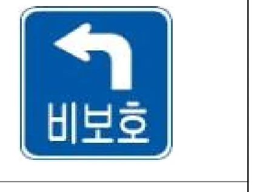

912. 下列关于安全标志的说明中正确的是？

- ①与信号无关，无车辆通行时即可左转。
- ②交通信号灯亮起红灯时，在不妨碍其他交通的情况下可以左转。
- ③因是非保护区，所以无左转信号时不得左转。
- ④交通信号灯亮起绿灯时，在不妨碍其他交通的情况下可以左转。
查看答案
答案
④ 交通信号灯亮起绿灯时，在不妨碍其他交通的情况下可以左转。
依据
道路交通法实施细则[附录6] 指示标志329，无保护左转标志，允许您在发出前进信号时左转，以免干扰从相反方向驶来的车辆。
依据文字为学习用机器翻译。